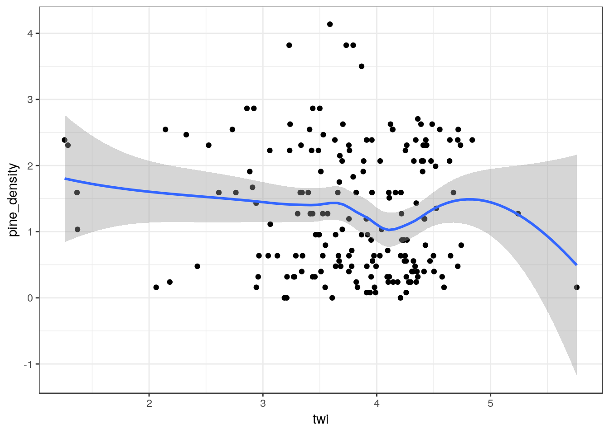
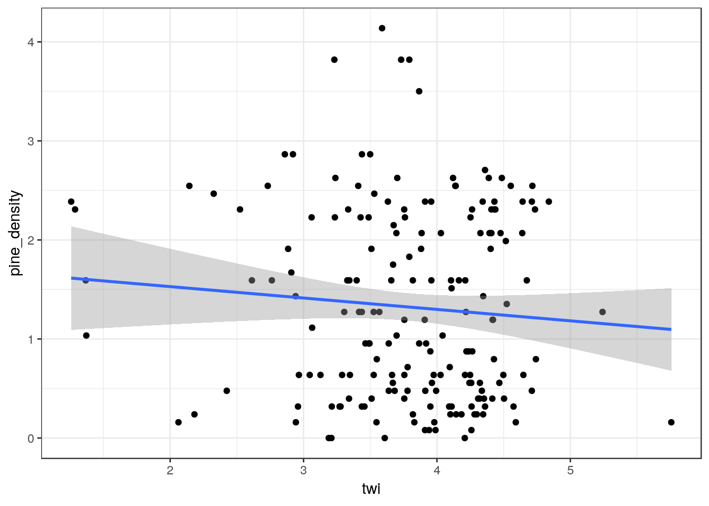

Chapter 21 Statistical analysis of the pine density data
21.1 Introduction
In the last handout we extracted variables that may (or may not) be associated with the densities of pines that were measured in the quadrats at Arne. To do this we used R as a Geographical Information system. Now that we have built a data table we can return to using R for statistical analysis.
It is probably a good idea to start a new markdown document for this part of the assignment work. To prevent confusion clear the Environment using the “sweeping brush” in the top right panel.
21.1.1 Loading libraries
knitr::opts_chunk$set(echo = TRUE,message = FALSE,warning = FALSE)We are not going to make maps, so we don’t need as many libraries.
library(aqm)
library(ggplot2)
library(dplyr)
library(mgcv)You now just need to read in the data.
d<-read.csv(file="arne_quadrats.csv")
# Alternative data load. Only use these lines if you have problems loading the csv
# Uncommenting (removing the # activates the code)
# data(arne_quads)
# d<-arne_quadsdt(d)21.2 Running analyses
OK, so now you have the data. It is up to you to design some relevant analyses. These do not need to be very complex for this assignment. You should produce relevant scatterplots with fitted lines. Don’t worry if you can’t actually find any clear cut relationships between variables. This is a common occurence when conducting real life field work. If there are no clear relationships then you need to think carefully about why they are not clear.
As an example of one possible analysis I have included code for plotting figure to investigate the relationship between pine density and topographic wetness index.
g0<-ggplot(d, aes(x=twi,y=pine_density))
g1<-g0 + geom_point() g1 + geom_smooth()
g1 + geom_smooth(method="lm")
mod<-lm(data=d, pine_density~twi)
summary(mod)##
## Call:
## lm(formula = pine_density ~ twi, data = d)
##
## Residuals:
## Min 1Q Median 3Q Max
## -1.3920 -0.8437 -0.1104 0.8288 2.7921
##
## Coefficients:
## Estimate Std. Error t value Pr(>|t|)
## (Intercept) 1.7592 0.3890 4.522 1.1e-05 ***
## twi -0.1152 0.1010 -1.140 0.256
## ---
## Signif. codes: 0 '***' 0.001 '**' 0.01 '*' 0.05 '.' 0.1 ' ' 1
##
## Residual standard error: 0.955 on 182 degrees of freedom
## Multiple R-squared: 0.007094, Adjusted R-squared: 0.001638
## F-statistic: 1.3 on 1 and 182 DF, p-value: 0.2557